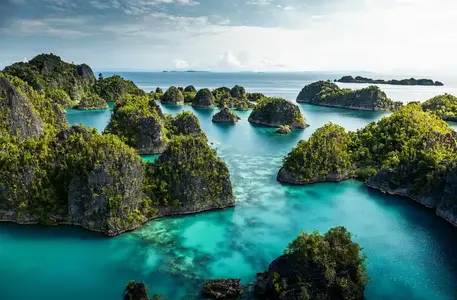

Raja Ampat is a stunning archipelago comprising over 1,500 small
islands. These host thousands of species some of which are endemic to
the region. It’s a relatively new regency which separated from Sorong
Regency in 2004. It encompasses more than 40,000 km² of land and sea.
This also contains Cenderawasih Bay, the largest marine national park in
Indonesia. It is a part of the newly named West Papua (province) of
Indonesia which was formerly Irian Jaya.
Sea and weather temperatures are stable all year round in the Raja
Ampat islands. This makes it very easy to plan your journey. The sea
temperature is between 28°C and 29°C all year. Historical weather
temperature averages are 30°C during the day and 24°C during the
evening. Raja Ampat Indonesia has two seasons and the direction of
the wind dominates these rather than the rain. Like many tropical
places, Raja Ampat is rainy all year round with tropical showers and
sunshine within the same day.
TELUK KABUI
FRIWEN
PIAYNEMO
TELAGA BINTANG
ARBOREK
SAWANDAREK
PASIR TIMBUL
WARSAMBIN
KALI BIRU
PULAU WAYAG